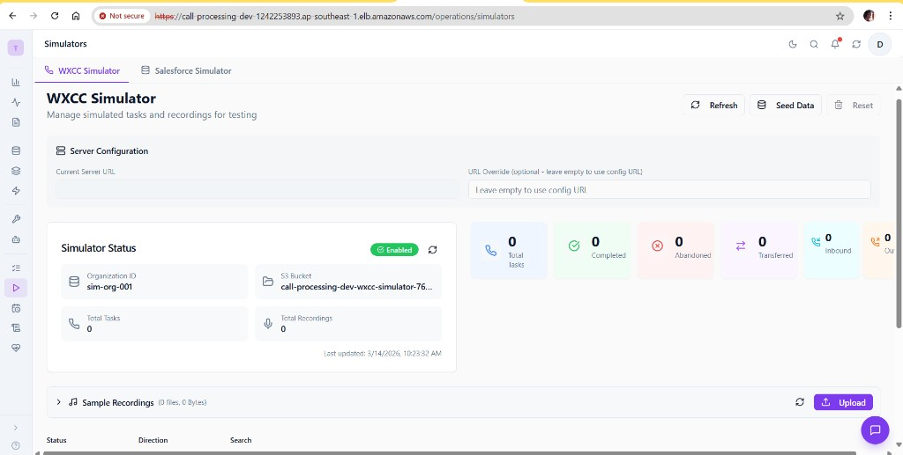

WXCC Simulator Guide¶
Screenshots
To capture additional screenshots of the simulator UI, run the Playwright script:
python3 docs/simulators/capture-simulator-screenshots.py
Overview¶
The WXCC Simulator provides a fully functional mock of the Cisco Webex Contact Center (WXCC) API within the CallSense platform. It allows teams to develop, test, and demo the call-processing pipeline -- including task ingestion, recording retrieval, transcription, and analytics -- without requiring a live Webex CC tenant or OAuth credentials.
Key capabilities:
- Creates realistic call tasks with randomized metadata (phone numbers, queues, agents, statuses)
- Stores and streams call recordings from S3 (real audio files or synthetic fallback)
- Exposes WXCC-compatible REST endpoints consumed by the existing call-processing stages
- Managed entirely through the UI, CLI, or REST API
Architecture¶
Real Mode vs Simulator Mode¶
The platform uses a feature flag (WXCC_SIMULATOR_ENABLED) to decide which backend serves WXCC data. When the simulator is enabled, the WXCCGraphAPI client routes requests to the local simulator API instead of the real Webex CC endpoints.
flowchart TB
subgraph realMode [Real Mode]
App_R[Call Processing Stage]
WXCC_R[WXCCGraphAPI Client]
OAuth[Webex OAuth Provider]
WebexAPI[Webex CC REST API\napi.wxcc-us1.cisco.com]
App_R --> WXCC_R
WXCC_R -->|OAuth Token| OAuth
WXCC_R -->|GET /v1/tasks\nPOST /v1/captures/query| WebexAPI
end
subgraph simMode [Simulator Mode]
App_S[Call Processing Stage]
WXCC_S[WXCCGraphAPI Client]
SimAPI[Simulator API\nlocalhost:8000/api/v1/simulator]
SimService[WXCCSimulatorService]
S3[(S3 Bucket\nwxcc-simulator)]
App_S --> WXCC_S
WXCC_S -->|Bearer sim-token| SimAPI
SimAPI --> SimService
SimService -->|data.json\nrecordings/*| S3
endComponent Map¶
| Component | Location | Role |
|---|---|---|
| WXCCSimulatorService | starhub-backend/src/services/wxcc_simulator_service.py |
Core service: S3 storage, task/recording CRUD, seeding, caching |
| Simulator API | starhub-backend/src/apis/wxcc_simulator_api.py |
FastAPI router exposing WXCC-compatible + admin endpoints |
| Simulator Processor | starhub-backend/src/stages/wxcc-simulator/simulator_processor.py |
Stage processor that feeds simulator tasks into the pipeline |
| Simulator Stage | starhub-backend/src/stages/wxcc-simulator/wxcc_simulator_stage.py |
Journey stage definition for WXCC simulator |
| Seed Script | starhub-backend/scripts/wxcc-simulator/seed_simulator.py |
CLI tool to seed/reset the simulator |
| MCP Tool | starhub-backend/src/tools/wxcc_simulator_tool.py |
AI tool for programmatic simulator interaction |
| UI Panel | starhub-ui/src/components/wxcc-simulator/WXCCSimulatorPanel.tsx |
Main React component for the WXCC simulator tab |
| UI Service | starhub-ui/src/services/wxccSimulatorService.ts |
Frontend API client |
S3 Storage Layout¶
All simulator data lives under a single S3 bucket with the following prefix structure:
s3://{bucket}/{prefix}/
├── data.json # Task and recording metadata (JSON)
├── recordings/
│ ├── {uuid}.mp3 # Actual call recording files
│ ├── {uuid}.wav
│ └── ...
└── sample-recordings/
├── call-sample-01.mp3 # Source audio used during seeding
├── call-sample-02.wav
└── ...
| File | Purpose |
|---|---|
data.json |
Central metadata store containing all tasks and recording references |
recordings/ |
Audio files associated with specific tasks (copied from samples during seeding) |
sample-recordings/ |
Pool of source audio files that get randomly assigned to tasks during seeding |
Data Sources and Population¶
How Data Gets Into the Simulator¶
The simulator is populated through seeding -- a process that generates mock task records and optionally associates audio recordings with each task.
flowchart LR
subgraph sources [Audio Sources - Priority Order]
Local["1. Local Files\nscripts/wxcc-simulator/recordings/"]
S3Samples["2. S3 Sample Recordings\n{prefix}/sample-recordings/"]
Synthetic["3. Synthetic WAV\n440Hz sine wave"]
end
subgraph seeding [Seed Process]
SeedAPI["POST /api/v1/simulator/seed"]
SeedService["WXCCSimulatorService.seed_data()"]
end
subgraph output [Output in S3]
DataJSON["data.json\n(task + recording metadata)"]
RecFiles["recordings/*.mp3\n(audio files)"]
end
Local --> SeedService
S3Samples --> SeedService
Synthetic --> SeedService
SeedAPI --> SeedService
SeedService --> DataJSON
SeedService --> RecFilesRecording Source Priority¶
When seeding tasks with recordings, the service selects audio files in this order:
- Local recordings -- Files in
starhub-backend/scripts/wxcc-simulator/recordings/(MP3, WAV, M4A, OGG, FLAC). Best for local development where you have actual call recordings. - S3 sample recordings -- Files previously uploaded to
s3://{bucket}/{prefix}/sample-recordings/. Used in Docker/Kubernetes environments where local files are unavailable. Cached via an LRU cache (max 20 files, 50 MB). - Synthetic audio -- As a last resort, a 440 Hz sine wave WAV file is generated programmatically. This produces valid audio but has no speech content.
Sample Task Data¶
Seeded tasks use randomized values from these pools:
| Attribute | Sample Values |
|---|---|
| Origins | +6591234567, +6598765432, +6581112222, +6589998888, +6577776666, +6566665555 |
| Destinations | +6560001111, +6560002222, +6560003333 |
| Queues | Sales Queue, Technical Support, Billing Inquiries |
| Agents | John Smith (agent-001), Jane Doe (agent-002), Bob Wilson (agent-003) |
| Task Names | Inbound Sales Call, Technical Support Request, Billing Inquiry, Account Update, Service Complaint |
| Statuses | Completed (85%), Abandoned (10%), Transferred (5%) |
| Directions | Inbound, Outbound (equal probability) |
| Duration | 60-600 seconds (1-10 minutes) |
Using the Simulator (UI)¶
The WXCC Simulator is accessed via Operations > Simulators > WXCC Simulator tab.
Page Layout¶

The WXCC Simulator page is organized into these sections:
- Header -- Title, Refresh / Seed Data / Reset buttons
- Server Configuration -- Shows the current server URL and an optional URL override field
- Simulator Status -- Card displaying enabled state, Organization ID, S3 bucket, task/recording counts, last updated timestamp
- Statistics -- Visual breakdown of task counts by status (Total, Completed, Abandoned, Transferred, Inbound, Outbound)
- Sample Recordings -- Collapsible section for managing source audio files
- Filter Controls -- Filter tasks by status, direction, and text search
- Tasks Table -- Paginated table of all simulator tasks
- Task Details Modal -- Click a task row to view full details and play recordings
Server Configuration¶
The Server Configuration section at the top of the page shows:
- Current Server URL -- The backend URL the simulator is running on (read-only).
- URL Override -- An optional field to point the simulator at a different backend URL. Leave empty to use the default from the application config.
Seeding Data¶
To populate the simulator with test data:
- Click Seed Data in the header.
- The Seed Data dialog appears with the following configuration options:
- Configure the seed parameters:
| Parameter | Range | Default | Description |
|---|---|---|---|
| Number of Tasks | 1 - 100 | 10 | How many mock call tasks to create |
| Days Back | 0 - 30 | 7 | Time span over which tasks are distributed |
| Include sample recordings | on/off | on | Attach audio files to tasks |
| Reset existing data first | on/off | off | Delete all existing data before seeding |
- Click Seed Data to begin. The process creates tasks, uploads recordings to S3, and updates
data.json.
Quick Testing
For immediate testing with the call-processing pipeline, use a small number of tasks (2-5) with "Reset existing data first" enabled. The tasks will be created with recent timestamps.
Managing Sample Recordings¶
The Sample Recordings section (collapsible, visible at the bottom of the overview screenshot) lets you manage the pool of source audio files:
- Upload -- Click Upload to add MP3, WAV, M4A, OGG, or FLAC files. These are stored in
s3://{bucket}/{prefix}/sample-recordings/and used during subsequent seeding. - List -- Shows all uploaded sample recordings with file name, size, and last modified date.
- Delete -- Remove individual sample recordings from S3.
Note
Sample recordings are distinct from task recordings. Sample recordings are the source pool; during seeding, files are randomly selected from this pool and copied into the recordings/ prefix as task-specific recordings.
Browsing Tasks¶
The tasks table (below the Sample Recordings section) displays all simulator tasks with columns:
| Column | Description |
|---|---|
| Status | Completed, Abandoned, or Transferred (with color-coded icons) |
| Direction | Inbound or Outbound |
| Task Name | Randomly assigned task type |
| Origin | Caller phone number |
| Destination | Called number |
| Queue | Queue the call was routed to |
| Agent | Agent who handled the call |
| Created | Timestamp when the task was created |
| Recordings | Number of recordings attached |
Filtering:
- Status filter -- Show only Completed, Abandoned, or Transferred tasks
- Direction filter -- Show only Inbound or Outbound tasks
- Search -- Free-text search across task name, origin, destination, queue, agent
Viewing Task Details¶
Click any task row to open the Task Details Modal, which shows:
- Full task metadata (ID, name, channel type, timestamps)
- Task attributes (status, direction, origin, destination, queue, agent)
- Associated recordings with an inline audio player for playback
Resetting the Simulator¶
Click Reset in the header to delete all tasks and recordings from the simulator. A confirmation dialog appears before the action is executed. This:
- Deletes all recording files from S3
- Clears the
data.jsonmetadata - Resets task and recording counts to zero
Using the Simulator (CLI)¶
Seed Script¶
The seed script (starhub-backend/scripts/wxcc-simulator/seed_simulator.py) supports two modes:
API Mode (gateway running)¶
# Seed 10 tasks over 7 days with recordings (default)
python scripts/wxcc-simulator/seed_simulator.py --api http://localhost:8000
# Seed 50 tasks over 14 days
python scripts/wxcc-simulator/seed_simulator.py --api http://localhost:8000 --tasks 50 --days 14
# Reset and re-seed with current timestamps
python scripts/wxcc-simulator/seed_simulator.py --api http://localhost:8000 --reset --tasks 5 --now
# Check simulator status
python scripts/wxcc-simulator/seed_simulator.py --api http://localhost:8000 --status
Direct S3 Mode (no gateway required)¶
# Seed directly to S3 (auto-detects bucket from .env.local)
python scripts/wxcc-simulator/seed_simulator.py --tasks 20
# Seed with explicit bucket
python scripts/wxcc-simulator/seed_simulator.py --bucket call-processing-dev-wxcc-simulator --tasks 20
# Upload local sample recordings to S3 (one-time setup for Docker)
python scripts/wxcc-simulator/seed_simulator.py --upload-samples --bucket call-processing-dev-wxcc-simulator
CLI Options Reference¶
| Option | Type | Default | Description |
|---|---|---|---|
--api |
URL | -- | Seed via API (provide gateway URL) |
--tasks |
int | 10 | Number of tasks to create |
--days |
int | 7 | Spread tasks over this many days |
--no-recordings |
flag | off | Skip recording creation |
--org-id |
string | sim-org-001 |
Organization ID |
--reset |
flag | off | Reset simulator before seeding |
--now |
flag | off | Use current timestamp for all tasks |
--bucket |
string | auto-detected | S3 bucket name |
--prefix |
string | wxcc-simulator |
S3 prefix |
--region |
string | ap-southeast-1 |
AWS region |
--upload-samples |
flag | off | Upload all local recordings to S3 sample-recordings/ prefix |
--upload-recording |
path | -- | Upload a single recording file |
--status |
flag | off | Show simulator status and exit |
Bucket Auto-Detection¶
When --bucket is not specified, the script auto-detects the bucket name using:
WXCC_SIMULATOR_BUCKETenvironment variable- Constructed from
CAPABILITY_NAME+ENVIRONMENT:{capability}-{env}-wxcc-simulator - Values loaded from
.env.localin the project root
API Reference¶
All endpoints are under /api/v1/simulator.
WXCC-Compatible Endpoints¶
These endpoints match the Webex CC API contract, allowing the existing call-processing code to work unchanged.
| Method | Endpoint | Description |
|---|---|---|
| GET | /tasks |
List tasks (supports from, to, orgId, channelType, pageSize query params) |
| POST | /captures/query |
Get recordings for a list of task IDs (body: {"taskIds": [...]}) |
| GET | /recordings/{id} |
Stream recording audio (returns audio bytes) |
| GET | /recordings/{id}/url |
Get a presigned S3 URL for direct download |
Admin Endpoints¶
| Method | Endpoint | Description |
|---|---|---|
| GET | /status |
Simulator status (enabled, org, bucket, counts) |
| GET | /admin/tasks |
List all tasks with summary info |
| POST | /tasks |
Create a single task |
| PUT | /tasks/{id} |
Update a task |
| DELETE | /tasks/{id} |
Delete a task and its recordings |
| POST | /tasks/{id}/recordings |
Upload a recording for a task |
| POST | /seed |
Seed sample data |
| POST | /reset |
Reset all data |
| GET | /sample-recordings |
List sample recordings |
| POST | /sample-recordings |
Upload a sample recording (multipart form) |
| DELETE | /sample-recordings/{filename} |
Delete a sample recording |
| GET | /health |
Health check |
Config Endpoints¶
| Method | Endpoint | Description |
|---|---|---|
| GET | /api/v1/config/wxcc-mode |
Get current WXCC mode (simulator or real) |
Example: Seed via API¶
curl -X POST http://localhost:8000/api/v1/simulator/seed \
-H "Content-Type: application/json" \
-d '{
"num_tasks": 10,
"include_recordings": true,
"days_back": 7,
"use_current_time": false
}'
Example: Get Simulator Status¶
Response:
{
"enabled": true,
"org_id": "sim-org-001",
"bucket": "call-processing-dev-wxcc-simulator",
"prefix": "wxcc-simulator",
"task_count": 10,
"recording_count": 10,
"last_updated": "2026-03-15T08:30:00Z"
}
Configuration Reference¶
Environment Variables¶
| Variable | Default | Description |
|---|---|---|
WXCC_SIMULATOR_ENABLED |
true |
Enable the WXCC simulator |
WXCC_SIMULATOR_BUCKET |
call-processing-{env}-wxcc-simulator |
S3 bucket for simulator data |
WXCC_SIMULATOR_PREFIX |
wxcc-simulator |
S3 key prefix |
WXCC_SIMULATOR_BASE_URL |
http://localhost:8000 |
Base URL used in recording file paths |
WXCC_SIM_ORG_ID |
sim-org-001 |
Simulated organization ID |
WXCC_SIM_TOKEN |
test-token-12345 |
Bearer token for simulator authentication |
System Settings (UI)¶
The WXCC Simulator settings are also available in the application Settings page under System > WXCC Simulator. This provides an admin-friendly UI for editing the SSM parameters:
| Setting | Type | Default | Description |
|---|---|---|---|
| Enabled | Toggle | on | Enable WXCC simulator mode |
| Bucket | Text | call-processing-{env}-wxcc-simulator |
S3 bucket for simulator data |
| Prefix | Text | wxcc-simulator |
S3 prefix for simulator data |
| Org Id | Text | sim-org-001 |
Simulated organization ID |
Changes are persisted to AWS SSM Parameter Store and take effect immediately. Use Save Changes to apply or Reset to revert to defaults.
AWS SSM Parameters¶
| Parameter Path | Description |
|---|---|
/call-processing/{env}/wxcc/enabled |
true/false -- master enable flag |
/call-processing/{env}/wxcc/bucket |
S3 bucket name |
/call-processing/{env}/wxcc/prefix |
S3 prefix |
/call-processing/{env}/wxcc/org-id |
Organization ID |
Per-Journey Configuration¶
Each journey in Journey Studio can specify its own WXCC mode:
| Mode | Behavior |
|---|---|
simulator |
Always use the WXCC simulator for this journey |
real |
Always use the real Webex CC API for this journey |
inherit_global |
Use whatever mode is set globally (default) |
This is configured in the Create Journey dialog or journey settings via the wxccMode field.
Memory Safety¶
The simulator implements bounded caching to prevent memory issues in production:
| Limit | Value | Purpose |
|---|---|---|
| Max sample cache size | 50 MB | LRU cache for sample recording bytes |
| Max sample files cached | 20 | Maximum items in sample cache |
| Max tasks in data cache | 10,000 | Upper bound on cached task records |
| Data cache TTL | 60 seconds | How long before S3 data is re-fetched |
Troubleshooting¶
Simulator shows "Enabled" but no tasks appear¶
- Check that seeding has been performed (click Seed Data or run the seed script).
- Verify the S3 bucket exists and is accessible. Check the bucket name in the status card.
- Check backend logs for S3 permission errors.
"Connection Error" banner in the UI¶
- Ensure the backend server is running and accessible from the browser.
- If using a URL override, verify it points to a valid running backend instance.
Recordings play silence or fail to load¶
- If using synthetic recordings (no local or S3 sample files), the audio will be a 440 Hz tone with no speech.
- Upload real call recordings via the Sample Recordings section, then re-seed.
- Check that the S3 bucket allows
GetObjectoperations from the backend IAM role.
Seed script fails with "Could not determine S3 bucket"¶
- Set
WXCC_SIMULATOR_BUCKETin your environment or.env.local. - Or provide
--bucketexplicitly on the command line. - Or use
--apimode to seed through the running gateway (bucket is resolved server-side).
Tasks created but not picked up by Call Processing¶
- Ensure the journey is configured with
wxccMode: simulatoror that the global mode is set to simulator. - Check that the task timestamps fall within the time range the job is querying. Use
--nowduring seeding for immediate pickup. - Verify the
orgIdmatches between the simulator and the journey configuration.
S3 bucket not found in a new environment¶
The Kubernetes operator automatically provisions the {capability}-{env}-wxcc-simulator bucket. If deploying manually, create the bucket in the correct region and set the environment variable.